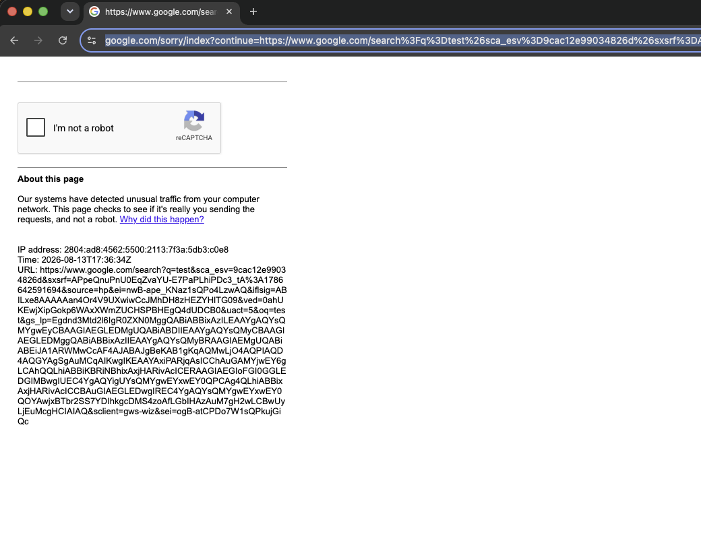

Fingerprint Injection
Pydoll can make the browser report a different, fully consistent identity with a single call: tab.apply_fingerprint(). It overrides the whole surface that fingerprinting scripts read (User-Agent and Client Hints, navigator, WebGL, screen, fonts, audio, timezone and locale) and aligns every layer so the browser tells one coherent story.
This is spoofing, not anonymity
A fingerprint hides which real machine you are by presenting a plausible, self-consistent alternative. It does not make you invisible, and it cannot fix a flagged IP or a network-layer contradiction (see Consistency Is the Whole Game). Used carelessly, an inconsistent fingerprint is more detectable than an untouched browser.
Quick Start
Apply the fingerprint before navigating. The JavaScript overrides register via Page.addScriptToEvaluateOnNewDocument, so they only take effect on documents loaded after the call.
import asyncio
from pydoll.browser.chromium import Chrome
from examples.fingerprints import FINGERPRINTS
async def spoof_fingerprint():
async with Chrome() as browser:
tab = await browser.start()
# Apply before the first navigation.
await tab.apply_fingerprint(FINGERPRINTS['windows11_rtx3060_nyc'])
await tab.go_to('https://abrahamjuliot.github.io/creepjs/')
print('Fingerprint applied.')
await asyncio.sleep(5)
asyncio.run(spoof_fingerprint())
The argument is a FingerprintConfig (a typed dictionary from pydoll.protocol.fingerprint.types) describing the identity. Only the fields you set are overridden; everything else keeps the real browser's value. The profiles in examples/fingerprints.py are complete, internally consistent references you can read to learn the shape (see Bring Your Own Fingerprints).
What Gets Spoofed, and How
Pydoll overrides identity through two mechanisms, and the choice between them is deliberate.
Via CDP (applied natively by the browser)
Whatever Chrome can override itself is overridden through the DevTools Protocol's Emulation domain. This is always preferred: the browser applies the change below JavaScript, so the getter a detection script reads is still the genuine native one. There is no JavaScript wrapper to inspect.
| Signal | CDP command |
|---|---|
User-Agent, navigator.platform / vendor / appVersion, Client Hints (Sec-CH-UA*) |
Emulation.setUserAgentOverride |
Timezone (Intl, Date) |
Emulation.setTimezoneOverride |
| Geolocation | Emulation.setGeolocationOverride |
Screen size, devicePixelRatio, viewport, orientation |
Emulation.setDeviceMetricsOverride |
Locale (Intl formatting) |
Emulation.setLocaleOverride |
navigator.hardwareConcurrency |
Emulation.setHardwareConcurrencyOverride |
Why native beats JavaScript
Setting navigator.hardwareConcurrency with a JavaScript getter leaves a fake that a script can catch (see below). Setting it with Emulation.setHardwareConcurrencyOverride makes the value change while the getter stays byte-for-byte native. When a CDP override exists, Pydoll uses it and skips the JavaScript path entirely.
Via JavaScript injection
Everything CDP cannot reach is injected as a script that runs before any page script on every new document (and is replayed inside Web Workers, see below). This covers:
navigatorextras:deviceMemory,maxTouchPoints,doNotTrack,pdfViewerEnabledscreen.availWidth/availHeight(CDP forces these equal to the screen size, a headless tell),colorDepth,pixelDepth, andwindow.outerWidth/outerHeight- WebGL vendor, renderer, and parameter/precision values
navigator.mediaDevices, Web Audio,speechSynthesisvoices- Font availability (
document.fonts.check/FontFace.load) navigator.connection(Network Information API)navigator.permissionsquery results- WebRTC IP handling policy
Canvas is left authentic on purpose
Pydoll does not add noise to the canvas or WebGL readback. Detection systems request the fingerprint multiple times; a hash that changes between reads is itself a strong automation signal. The authentic canvas of a real Chrome is consistent and unremarkable. What matters is that the WebGL vendor/renderer you claim is coherent with the platform you claim, which is exactly what the override aligns.
The Prototype Problem
The hard part of spoofing is not changing a value, it is not getting caught changing it. Modern anti-bot scripts (CreepJS is the reference implementation) do not just read navigator.hardwareConcurrency; they inspect how that property is defined and whether the surrounding machinery has been tampered with. Three tells have become standard, and naive spoofing fails all three.
1. Own-property where a prototype getter should be. On a real browser, hardwareConcurrency is an accessor on Navigator.prototype, not a data property on the navigator instance. The naive approach creates an own-property:
// Detectable: creates an own-property on the instance
Object.defineProperty(navigator, 'hardwareConcurrency', { get: () => 8 });
// navigator.hasOwnProperty('hardwareConcurrency') -> true (real Chrome: false)
A script that walks Object.getOwnPropertyNames(navigator) or compares the instance against its prototype sees the anomaly immediately.
2. A toString that betrays the fake. Every native getter reports as native code:
Object.getOwnPropertyDescriptor(Navigator.prototype, 'hardwareConcurrency')
.get.toString();
// real: "function get hardwareConcurrency() { [native code] }"
// naive: "() => 8" or "function () { ... }"
Function.prototype.toString on a hand-written getter returns its JavaScript source, so a single .toString() call exposes the override.
3. Cross-realm leaks. A page can create a fresh JavaScript realm (a same-origin iframe, or a Web Worker) whose navigator and prototypes are untouched by a hook installed only in the main realm. A worker has its own WorkerNavigator; if it reports the real hardwareConcurrency while the page reports a fake, the two disagree and the lie is proven.
How Pydoll resolves it
- Getters are defined on the prototype, where the native ones live (
Navigator.prototype,Screen.prototype), so the instance keeps no anomalous own-properties. - Injected functions report as native under
toString. The override is installed so thattoStringintrospection of the patched getters is indistinguishable from a genuine[native code]accessor, and the patch totoStringitself does not become a new tell. - The identity is replayed inside workers. Pydoll auto-attaches to dedicated, shared, and service workers and applies the same overrides to each
WorkerNavigator, so the page and every realm it spawns tell the same story.
This is what lets a Pydoll fingerprint pass CreepJS's lie-detection, prototype, worker, and font checks rather than merely changing the visible numbers.
Headless Mode
Before fingerprint injection, headless Chrome was easy to detect, and that is precisely why bot checks and captchas so often failed in headless: the browser looked like a bot before any interaction happened. Running without a real display and GPU changes measurable signals:
- WebGL renderer (the decisive tell). Without GPU passthrough, headless Chrome renders through a software rasterizer (SwiftShader).
UNMASKED_RENDERER_WEBGLreports something likeANGLE (Google, Vulkan 1.3.0 (SwiftShader))orGoogle SwiftShaderinstead of a real GPU string such asANGLE (NVIDIA, NVIDIA GeForce RTX 3060 Direct3D11)orApple M3. This tell is deadly because patching the string alone does not fix it: the entire GPU capability surface (supported extensions, shader precision, max texture size) still reflects the software renderer and gets cross-checked against the claimed GPU. - Empty
navigator.plugins/mimeTypes, where real desktop Chrome exposes built-in PDF viewer entries. screen.availWidth/availHeightequal to the full screen size (no taskbar or dock gap), plus a fixed or zeroed outer window.- Missing media devices, and font/audio rasterization that differs from a machine with a real display.
- On the old
--headless, aHeadlessChrometoken in the User-Agent (removed in--headless=new, but every rendering tell above remains).
Fingerprint injection neutralizes these. It overrides the WebGL vendor and renderer and the parameter and precision surface, so the whole GPU story stays coherent rather than just the string; reports availWidth / availHeight with a realistic taskbar gap; restores media devices and fonts; and pins the User-Agent through CDP so no HeadlessChrome token survives. With a profile applied, every detection site tested reports the browser as an ordinary, headful Chrome, and running headless no longer changes the outcome.
In practice, this is what lets a plain Google search run in headless mode: the same automation Google blocked while headless goes through once the fingerprint makes the browser look real.
import asyncio
from pydoll.browser.chromium import Chrome
from pydoll.constants import Key
from examples.fingerprints import FINGERPRINTS
async def headless_google_search():
async with Chrome() as browser:
tab = await browser.start(headless=True)
# Neutralizes the headless rendering tells before the first navigation.
await tab.apply_fingerprint(FINGERPRINTS['windows11_rtx3060_nyc'])
await tab.go_to('https://www.google.com')
search_box = await tab.find(tag_name='textarea', name='q')
await search_box.type_text('pydoll', humanize=True)
await tab.keyboard.press(Key.ENTER)
await asyncio.sleep(3)
print('Google search completed in headless mode.')
asyncio.run(headless_google_search())
Pairing this with Cloudflare Turnstile
The most common reason Turnstile fails with a fingerprint applied is a Chrome version mismatch, not headless, see Case Study: a Chrome Version Mismatch Triggering Cloudflare's Challenge. Match the profile's version to the real binary first. Even with that fixed, reliable headless Turnstile is still being validated, so prefer headful for Turnstile for now. See Cloudflare Turnstile.
Rendering, not reputation
Fingerprint injection removes the headless rendering tells; it does not change your IP. A datacenter IP with a poor reputation is still challenged in headless and headful alike (see Cloudflare Turnstile → What Determines Success). Pair a consistent fingerprint with a clean residential IP.
Consistency Is the Whole Game
A fingerprint is only as strong as its weakest layer, and anti-bot systems correlate signals across all of them. A browser that renders as macOS while its Accept-Language says Brazilian Portuguese, its timezone says Tokyo, and its IP geolocates to Germany is more suspicious than a browser you never touched.
apply_fingerprint() keeps the layers it controls internally consistent. You own the three it cannot:
- The Chrome binary you drive. The network-layer fingerprint (TLS JA3/JA4, HTTP/2
SETTINGS) is produced by the real browser and cannot be spoofed through CDP, and neither can the JavaScript engine's true version. A profile claiming Chrome 145 must run on a Chrome 145 binary, or the User-Agent contradicts the real handshake. This is exactly what blocks Cloudflare Turnstile, see Case Study: a Chrome Version Mismatch Triggering Cloudflare's Challenge. - The geography of your egress IP. The
Accept-Languageheader and timezone are cross-referenced against the IP's country. A US identity on a Brazilian IP is a contradiction (this is exactly the failure documented in Case Study: a Locale Mismatch Triggering Google's Captcha). - The host machine's real OS. The kernel's TCP/IP stack is a passive OS fingerprint (e.g. initial TTL 64 on macOS/Linux vs 128 on Windows), and the real GPU/text rendering also betrays the true OS. Neither is reachable through CDP. A Windows profile driven on a Mac is an OS contradiction that Cloudflare's managed challenge blocks, see Case Study: an OS Mismatch Triggering Cloudflare's Managed Challenge.
The Golden Rule
Every layer must tell the same story. See Browser Fingerprinting for the principle and Evasion Techniques → Timezone and Locale Consistency for how locale, timezone, and IP geolocation are correlated.
Case Study: a Locale Mismatch Triggering Google's Captcha
During testing, applying a US fingerprint profile made a plain Google search start returning a captcha. Commenting out the single apply_fingerprint() line made the block disappear. The fingerprint passed every dedicated fingerprinting site, so what was different about Google?
The mismatch. The profile declared a US identity (locale.languages = ['en-US', 'en']), but the machine ran behind a Brazilian IP with a Brazilian OS language. Google cross-references the Accept-Language header and Client Hints against the IP's country. A en-US browser arriving from a São Paulo IP is not a combination a real user usually produces, and the request headers arrived inconsistent with the rest of the signals. That single contradiction was enough to drop the trust score below Google's captcha threshold.
What locale actually controls. It is not cosmetic. The locale field drives:
- the
Accept-LanguageHTTP header sent on every request, navigator.languageandnavigator.languages,Intlformatting defaults (dates, numbers, currency).
All three are read by anti-abuse systems, and all three have to agree with the timezone and the IP. Fixing the profile to a Brazilian locale (matching the IP and OS) removed the block without changing anything else.

Inconsistent fingerprint: a US locale over a Brazilian IP. Google returns a captcha.
The takeaway
A fingerprint that passes every fingerprinting test can still get you blocked if one layer contradicts your environment. Detection is about correlation, not any single value. Match locale, timezone, and geolocation to your egress IP before blaming the fingerprint.
Case Study: a Chrome Version Mismatch Triggering Cloudflare's Challenge
To use the Cloudflare Turnstile interaction together with a fingerprint, the browser's advertised version has to match the real Chrome binary you drive. This is not optional, and getting it wrong is the single most common way fingerprint injection breaks Turnstile.
The observation. Applying the macos_m3_new_york profile made Cloudflare Turnstile fail even non-headless: the page stayed stuck on the "Just a moment…" interstitial and never cleared. Removing the one apply_fingerprint() call made it pass in four seconds. So the problem was not headless, and not the JavaScript injection (which passes every dedicated fingerprinting suite): it was something the override introduced.
The mismatch. The profile hardcoded Chrome 145 in its User-Agent, but the machine was driving a real Chrome 151 binary. apply_fingerprint() overrode navigator.userAgent, Sec-CH-UA, and navigator.userAgentData to claim 145, while the genuine TLS/HTTP2 handshake and the JavaScript engine stayed 151. A single-variable bisection confirmed it: holding everything else constant and flipping only the advertised major from 145 to 151 turned every failure into a pass.
Why the version must match. Two layers report the browser's real version and cannot be spoofed through CDP:
- The network handshake. The TLS fingerprint (JA3/JA4) and the HTTP/2
SETTINGSframe are produced by the real Chrome build before any JavaScript runs. They encode the real engine version. - The JavaScript engine surface. The set of available APIs and their behavior reflects the real V8/Blink build.
Cloudflare's managed challenge cross-references the version you claim (User-Agent + Client Hints) against the version it can observe (the handshake and engine). A real browser never claims a version different from the one it runs, so a claim of 145 over a 151 handshake is a contradiction no genuine client produces. Turnstile drops the trust score and the interstitial never clears.
How to match it. Read the real binary version and make the profile's User-Agent agree with it:
async with Chrome() as browser:
tab = await browser.start()
version = await browser.get_version()
print(version['product']) # e.g. 'Chrome/151.0.7922.137'
In examples/fingerprints.py, the CHROME_DESKTOP / CHROME_MOBILE constants set the version baked into every profile's User-Agent. Set them to the major your binary reports (the full build feeds Sec-CH-UA-Full-Version-List; the visible navigator.userAgent is reduced to Chrome/<MAJOR>.0.0.0 automatically). When you upgrade Chrome, bump them, or the next challenge will catch the drift.
The rule for Cloudflare + fingerprint
A fingerprint whose Chrome version does not match the real binary will be challenged by Turnstile, headful or headless. Align the profile's version to browser.get_version() before pairing fingerprint injection with the Cloudflare interaction.
Case Study: an OS Mismatch Triggering Cloudflare's Managed Challenge
After aligning the Chrome version (the case above), a second profile still failed. The cause is more fundamental: you cannot advertise an OS the machine does not run.
The observation. On this host (Apple Silicon, real Chrome 151, Brazilian IP), the macos_m3_new_york profile passes Cloudflare, and windows11_rtx3060_nyc fails (stuck on "Just a moment…"). The Chrome versions already match (both 151), so it is not the case above. And the failing profile is the one that is geographically consistent with the Brazilian IP, while the passing one is a US identity over the BR IP, so it is not locale either. The only difference that matters is the OS: one passes as macOS (matching the host), the other as Windows.
The bisection. Starting from the passing profile and mutating it toward the failing one, one axis at a time, the outcome tracked only the OS advertised in the User-Agent:
- Swapping just the User-Agent/platform from Windows to macOS on the failing profile: passes.
- Swapping just the User-Agent/platform from macOS to Windows on the passing profile: fails.
- Swapping to a Linux User-Agent: also fails.
- Swapping GPU/WebGL (renderer string, params, extensions), canvas, fonts, screen, hardware, audio, voices, geo, and locale: none flip the outcome.
Any OS other than macOS fails on this macOS host; any macOS identity passes. The GPU is irrelevant: a macOS profile advertising an NVIDIA GPU passes, and a Windows profile advertising the real Apple GPU fails.
The layer where it happens. Measuring what each layer actually reports to the server, under both profiles, on the same Chrome:
- TCP/IP (unspoofable): the server observes the same TTL for both profiles, implying an initial TTL of 64 (the macOS/Unix family). A Windows host would emit 128. The kernel stack says "macOS" no matter what the User-Agent claims.
- TLS (JA3/JA4): varies per connection (Chrome's padding-extension toggle); the same baseline with no fingerprint produces both variants. It does not encode the OS.
- HTTP/2 (Akamai fingerprint): identical between the profiles. It does not encode the OS.
- Client Hints: fully overridden to the advertised OS (under Windows,
architecturereportsx86, with noarmleak). - Canvas/WebGL: the rendered-image hash is identical between the profiles (they are real Apple GPU pixels in both). The rendered image is not the differentiator.
Everything apply_fingerprint() controls says Windows consistently; the one remaining layer, the kernel TCP/IP stack, says macOS. Cloudflare's managed challenge cross-references the OS you advertise (User-Agent + Client Hints) against the OS it can observe (the passive stack signature) and keeps the interstitial up when they disagree.
Why it cannot be spoofed through CDP. The TTL, window scaling, and TCP option order come from the host kernel, not the browser. No JavaScript or CDP override touches them. The real GPU rendering and text metrics (CoreText on macOS) are the host's too. That is why a foreign-OS profile cannot pass on browser-fingerprint spoofing alone, and why TLS-forging tools (curl_cffi, tls-client) do not help: the problem is not TLS, and they still use the host kernel's TCP/IP stack.
The fix. Match the profile's OS (and GPU family) to the real host. On this Mac, use a macOS/Apple profile; run Windows/NVIDIA profiles on a Windows host. A forwarding proxy (SOCKS5/HTTP CONNECT) re-originates the TCP connection from the proxy's kernel, so the OS Cloudflare observes becomes the proxy host's: to pass as Windows, the proxy must run on Windows (a Linux proxy would give a Linux signature, still inconsistent with a Windows User-Agent). It is not the GPU, canvas, or fonts that need tuning, it is the advertised OS that must match the kernel originating the packets.
The OS rule
You cannot advertise an OS the machine does not run. The kernel TCP/IP stack and the host's real rendering reveal the true OS in layers CDP cannot reach. Pick the profile whose OS matches the host (a macOS profile on a Mac, Windows on Windows), and do not try to spoof Windows over Apple hardware with browser fingerprinting alone.
Multiple Fingerprints and Browser Contexts
Service and shared workers are shared across every tab in a browser context, so a context can only hold one coherent identity. Pydoll enforces this: applying a different fingerprint to a context that already has one raises FingerprintContextConflict.
from pydoll.exceptions import FingerprintContextConflict
# Same context, two different fingerprints -> conflict
tab_a = await browser.start()
await tab_a.apply_fingerprint(FINGERPRINTS['windows11_rtx3060_nyc'])
tab_b = await browser.new_tab() # same (default) context
try:
await tab_b.apply_fingerprint(FINGERPRINTS['macos_m3_new_york'])
except FingerprintContextConflict:
print('One context holds one identity.')
To run different fingerprints side by side, put each in its own browser context:
ctx_id = await browser.create_browser_context()
tab_us = await browser.start()
tab_br = await browser.new_tab(browser_context_id=ctx_id)
await tab_us.apply_fingerprint(FINGERPRINTS['windows11_rtx3060_nyc'])
await tab_br.apply_fingerprint(FINGERPRINTS['android_s24_ultra_sao_paulo'])
See Browser Contexts for how isolated contexts work.
Bring Your Own Fingerprints
Pydoll does not generate or ship fingerprints
The profiles in examples/fingerprints.py exist only as a reference: they show how coherent a profile has to be and the exact shape of the FingerprintConfig you pass to apply_fingerprint(). They are not a catalog to deploy as-is, and they are not generated for you.
A usable fingerprint is one you build for your environment. It has to match:
- the real Chrome binary you drive (the network layer is authentic and unspoofable), and
- the geography of your egress IP (locale, timezone, geolocation).
Reuse a public profile widely enough and it stops being a disguise and becomes a signature. Build your own.
See Also
- Browser Fingerprinting - The Golden Rule and how detection works layer by layer
- Evasion Techniques - Timezone/locale consistency, User-Agent consistency, WebRTC leak protection
- Browser Fingerprinting (detection surface) - Canvas, WebGL, navigator, and font detection in depth
- Browser Contexts - Running multiple identities in isolation
- Proxy Configuration - Matching your egress IP to the fingerprint's geography